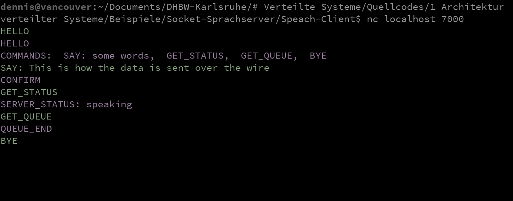
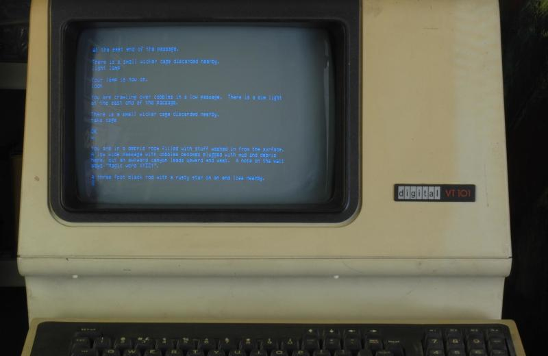

### Nach Abschluss dieses Kapitels können Sie …
* den Begriff verteiltes System erklären und von ähnlichen Begriffen abgrenzen.
* Beispiele für verteilte Anwendungen nennen und von normalen Anwendungen abgrenzen.
* die wichtigsten Gr√ºnde f√ºr die Entwicklung verteilter Systeme nennen. üí∞
* die Begriffe Client, Server und Peer definieren und voneinander abgrenzen.
* die gängigsten Architekturmuster verteilter Anwendungen beschreiben.
* die Bedeutung des CAP-Theorem verstehen und seine Bedeutung wiedergeben.
* die Schwierigkeiten zeitlicher Wechselwirkungen verteilter Anwendungen erkennen.
üèÅ
Als System (altgriechisch sýstēma „aus mehreren Einzelteilen zusammengesetztes Ganzes“)
wird im Allgemeinen ein abgrenzbares, natürliches oder künstliches „Gebilde“ bezeichnet,
das aus verschiedenen Komponenten mit unterschiedlichen Eigenschaften besteht, die aufgrund
bestimmter geordneter Beziehungen untereinander als gemeinsames Ganzes betrachtet werden
(können).
Wikipedia zum Begriff „System”
Ein **verteiltes System** ist ein System, in dem sich Hardware-
und Softwarekomponenten auf **mehreren Computern** befinden (können)
und diese nur über den **Austausch von Nachrichten** untereinander
kommunizieren, um ihre Aktionen zu koordinieren.
Langlaufendes Programm, das einen Dienst zur Verfügung stellt.
Wartet darauf, bis sich ein Client mit ihm verbindet.
üíø
Client
Kurzlebiges Programm, das den Dienst nutzt.
Stellt hierfür eine Verbindung zum Server her.
üíø
Peer
Spezielles Programm, das sowohl Client als auch Server ist.
üñ•
Host
Der Rechner, auf dem die Software läuft.
Oft sagen die Leute „Server” und meinen damit den „Host”.
Client/Server-Architektur
Peer-to-Peer-Architektur

Beschreibung
Dies ist die einfachste Architektur von allen. Sie besteht lediglich aus einem Server,
der einen Dienst anbietet und den Clients, welche den Dienst konsumieren. Sehr oft kommt
dabei ein synchrones, den Client blockierendes Request/Reply-Verfahren zum Einsatz, das
besonders einfach zu programmieren ist. Technisch gesehen ist dies aber kein Muss, da
Sockets prinzipiell jede Kommunikationsreihenfolge zulassen.
Fallbeispiele
Browser und Webserver im World Wide Web
Browser App mit Zugriff auf den Server via Websockets
Wartungszugang auf einen Rechner per Secure Shell
Zugriff auf ein E-Mailpostfach mit IMAP
Zentrale Quellcodeverwaltung mit Subversion
WebDAV-Zugriff auf einen geteilten Onlineordner
Beschreibung
Hierbei handelt es sich ebenfalls um eine Client/Server-Architektur, jedoch greift der Server zusätzlich
auf eine Datenbank zu. Client, Server und Datenbank werden daher den drei Schichten Darstellung,
Anwendungslogik und Datenhaltung zugeordnet. Für die Darstellung wurden früher ausschließlich
native Clients verwendet, die heute zunehmend von Webanwendungen und mobilen Apps verdrängt werden. Die
Schichten für die Anwendungslogik und Datenhaltung können hingegen auch mehrere Server umfassen.
Fallbeispiele
Jede Webanwendung mit einer Datenbank im Hintergrund
Einfache Informationssysteme ohne eigenständigen Präsentationsserver
Die meisten ERP- und CRM-Systeme (unter anderem SAP und Navision)
Per Webservice erreichbare Microservices
Beschreibung
Hierbei handelt es sich um eine Variation der Dreischichtenarchitektur, bei der die mittlere Sicht
in eine Präsentations- und eine Anwendungsschicht zerlegt wurde. Dieses Modell
findet man häufig bei ERP-Systemen, die mehrere Clienttechnologien unterstützen müssen.
Fallbeispiele
ERP- und CRM-Systeme mit einem eigenständigen Präsentationsserver
Java-Webanwendung mit getrenntem Deployment von Servlets und EJBs
Beschreibung
Microservices zerlegen eine große, monolithische Anwendung in viele kleine Teilanwendungen. Jeder Microservice hat
ein klar umrissenes Aufgabengebiet, besitzt eine gut dokumentierte und versionierte Schnittstelle und wird in der
Regel von einem eigenen Team entwickelt und betrieben. Entwicklung, Test und Betrieb sind sehr stark automatisiert.
Microservices eignen sich daher oft für große Firmen mit mehreren, unabhängigen Entwicklungsmannschaften.
Fallbeispiele
Amazon gilt allgemein als Vorreiter, obwohl sie den Begriff selbst nicht verwenden
Große Internetplattformen wie eBay, Netflix, SoundCloud, Spotify, …
Beschreibung
Serverseitig kann ein Reverse Proxy als API-Gateway eingesetzt werden, um die eingehenden Anfragen
zu bündeln. Dadurch wird es möglich, zusätzliche Sicherheitsprüfungen zu implementieren, häufig
angefragte Inhalte zu cachen oder eine transparente Lastverteilung vorzunehmen.
Anwendungsbeispiele
Steigerung der Performance durch Caching häufig angefragter Daten
Implementierung von Zugangsbeschränkungen und Upload Filtern
Realisierung von Paywalls zum Ausfiltern kostenpflichtiger Inhalte
Sicherstellen einer vorgelagerten, zentralen Authentifizierung
Serverseitige Lastverteilung durch Weiterleitung an unterschiedliche Server
Beschreibung
Ein clientseitiger Proxy bildet die Schnittstelle eines entfernten Servers innerhalb
des lokalen Netzwerks ab. Die Anfragen der Clients werden nicht direkt an den Server
sondern an den lokalen Proxy gesendet, der daraufhin entscheiden kann, ob er die
Anfragen weiterleitet oder selbst beantwortet.
Anwendungsbeispiele
Steigerung der Performance durch Caching häufig angefragter Daten
Implementierung von Zugangsbeschränkungen und Content Filtern
Clientseitige Lastverteilung durch Weiterleitung an unterschiedliche Server
Optimale Ressourcennutzung
Das System muss effizient mit den Ressourcen umgehen und möglichst viele Ressourcen
für die eigentliche Anwendung zur Verfügung stellen. Die Anwendung muss ebenfalls
intelligent damit umgehen und sie gut nutzen.
Stabilität und Fehlertoleranz
Programmabstürze und unvorhersehbares Verhalten sind unbedingt zu vermeiden.
Beim Programmieren muss man daher neben den fachlichen Fehlern auch die Fehler
berücksichtigen, die sich aus der Verteilung ergeben.
Einfache Skalierbarkeit
Es muss einfach möglich sein, die Leistung des Systems zu erhöhen oder diese zu reduzieren,
wenn sie nicht mehr benötigt wird. Dies kann je nach System automatisch oder manuell erfolgen.
Einfache Nutzung (Transparenz)
Zumindest für den Anwender sollte die inheränte Komplexität des Systems verborgen bleiben.
Entwickler und Administratoren freuen sich aber auch, wenn sie sich nicht um jede Kleinigkeit
kümmern müssen.
Einfache Erweiterbarkeit
Die Architektur muss flexibel genug sein, um einzelne Teile jederzeit austauschen oder
verbessern zu können.
Ich muss nichts tun. Es läuft einfach.
Bildnachweise:
Pixabay: stevepb,
Pixabay: Chiemsee2016,
Pixabay: monicore
Falls eine Anwendung zwischen lokalen (auf dem eigenen Rechner befindlichen) und
entfernten Ressourcen unterscheidet, müssen beide auf dieselbe Art und Weise
nutzbar sein.
Beispiel:
Eine Fotoverwaltung ermöglicht den Zugriff auf lokal gespeicherte Fotoalben.
Einzelne Bilder oder ganze Alben können aber auch auf einem entfernten Server
abgelegt sein, ohne dass sich die Bedienung hierdurch verändert.
Beispiel:
Eine Video-Streaming-App ermöglicht es, einzelne Videos vor dem Anschauen herunterzuladen,
damit diese auch bei langsamer Internetverbindung ruckelfrei abgespielt werden können.
Suche und Wiedergabe der Videos verändern sich aus Benutzersicht dadurch aber nicht, da
die Videos wie gewohnt aufgerufen und abgespielt werden können.
Beispiel:
Progressive Web Apps sind Webanwendungen, die nach dem ersten Aufruf im Browser auch lokal installiert
werden können. Sämtliche Dateien werden hierfür in einen lokalen Anwendungscache geladen, der auch offline
funktioniert. Die Entscheidung, ob eine Datei vom Server oder aus dem Cache geladen werden kann, erfolgt
dabei automatisch, ohne dass dies im Quellcode berücksichtigt werden muss.
Bildnachweise:
Pixabay: klimkin,
Pixabay: JosepMonter,
Pixabay: Monoar
Dienste und Ressourcen einer Anwendung können aufgerufen werden, ohne wissen zu müssen,
auf welchem Rechner sie sich befinden.
Beispiel:
Um die Ladezeit einer Webseite zu optimieren, werden häufig benötigte Dateien durch
Content Delivery Networks ausgeliefert. Hierfür betreiben die Content Delivery Networks
weltweit gespiegelte Rechenzentren, von denen automatisch das mit der kürzesten Zugriffszeit
ausgewählt wird. Auf dieselbe Weise spielen nebenbei auch Video-Streaming-Portale und andere
Onlinedienste ihre Inhalte aus.
Beispiel:
Die Webseite der DHBW Karlsruhe ist immer unter der Domain
karlsruhe.dhbw.de erreichbar.
Zwar muss die Domain zum Aufruf der Seite bekannt sein, diese enthält jedoch keine Informationen
darüber, auf welchen Rechner hierfür zugegriffen werden muss. Diese Information besorgt sich der
Browser stattdessen durch ein DNS-Lookup.
Beispiel:Zeroconf ermöglicht die
automatische Konfiguration von Netzwerkgeräten, wodurch unter anderem auch netzwerkfähige Drucker und Scanner
vom Betriebssystem erkannt und eingerichtet werden können. Selbst wenn ein Gerät komplett ausgetauscht wird,
muss die Konfiguration auf dem Anwender-PC nicht angepasst werden.
Bildnachweise:
Pixabay: WikiImages,
Pixabay: kreatikar,
Pixabay: stevepb
Die Ressourcen einer verteilten Anwendung können jederzeit auf andere Maschinen
umziehen, ohne dass sich dies auf die Anwendung auswirkt.
Beispiel:
Namensdienste wie das Domain Name System ermöglichen es, die damit verwalteten
Ressourcen jederzeit umzuziehen, da die exakte Adresse einer Ressource vor jedem
Zugriff darin nachgeschlagen werden muss. Aus diesem Grund kann sich zum Beispiel
die IP-Adresse einer Webseite jederzeit ändern, ohne dass die meisten Besucher*innen
dies merken.
Beispiel:
Die Datenbank einer Webanwendung wurde bisher auf derselben Maschine wie der Webserver betrieben,
soll nun aber auf eigene Hardware umziehen. Die Anwendung läuft nach dem Umzug wie gewohnt weiter,
da lediglich ein Eintrag in einer Konfigurationsdatei geändert werden musste. Die Entscheidung
der Programmierer, die Adresse des Datenbankservers nicht hart-codiert im Quellcode zu hinterlegen,
hat sich an diesem Tag als sehr weitsichtig herausgestellt.
Beispiel:
Der Hypervisor einer
Virtualisierungslösung entscheidet, eine virtuelle Maschine auf einen leistungsfähigeren
Rechenknoten umzuziehen. Hierfür wird die VM ohne Unterbrechung des laufenden Betriebs auf
den neuen Host kopiert und dort weiter ausgeführt.
Bildnachweise:
Pixabay: jackmac34,
Pixabay: ColossusCloud,
Pixabay: wynpnt
Besonders benutzerfreundliche Anwendungen unterscheiden nicht zwischen gespeicherten und
und nicht gespeicherten Daten. Die Speicherung erfolgt automatisch im Hintergrund.
Beispiel:
Cloudbasierte Officepakete wie Google Docs besitzen keinen Menüeintrag zum Speichern
eines Dokuments. Jede Änderung wird mit einem kleinen Zeitversatz automatisch gespeichert,
so dass man nie wieder etwas verlieren kann, wenn man Abends zu schnell aus dem Büro flieht.
Bildnachweis:
Pixabay: Simon
Aus Performancegründen oder zur Erhöhung der Ausfallsicherheit werden wichtige Daten auf
mehrere Rechenknoten repliziert. Die Datenreplikation erfolgt vollautomatisch im Hintergrund,
wobei das System bei jeder Änderung die Aktualisierung aller Kopien sicherstellt.
Beispiel:
Weltweit genutzte Anwendungen wie die Googlesuche, Facebook oder Instagram werden in global
verteilten Rechenzentren betrieben, um die Ladezeiten zu verkürzen. Die innerhalb der Anwendung
anfallenden Daten werden deshalb automatisch zwischen den Rechenzentren repliziert, damit jede*r
Anwender*in möglichst dieselben Daten sieht.
Beispiel:
Die meisten Datenbanken erlauben einen automatischen Cluster-Betrieb, wodurch alle Daten auf mehrere
Rechenknoten gespiegelt werden. Lesende Anfragen werden dann von irgend einem gerade verfügbaren Knoten
beantwortet, während ändernde Anfragen an alle Knoten weitergereicht werden.
Bildnachweise:
OpenStreetMap,
pixabay: FreePhotosART,
Fehlersituationen werden nicht als Ausnahme sondern als Normalfall betrachtet.
Eine Anwendung sollte daher immer so entworfen werden, dass sie möglichst viele
Fehlersituationen abfangen und automatisch korrigieren kann. Keinesfalls darf
eine Anwendung einfach abstürzen, wenn ein Weiterbetrieb prinzipiell möglich ist.
Beispiel:
Eine E-Mail kann nicht sofort zugestellt werden, da das Postfach des Empfängers
voll ist. Der Mailserver des Senders teilt deshalb mit, die Zustellung innerhalb
der nächsten Tage zu wiederholen. Nur, wenn die Nachricht nach fünf Tagen immer
noch nicht zugestellt wurde, wird der Absender über das endgültige Scheitern
informiert.
Beispiel:
Eine Wetterstation sammelt kontinuierlich Daten und sendet diese via UMTS an einen zentralen
Server. Bei schlechtem Wetter besteht allerdings nur eine unzuverlässige Internetverbindung,
so dass die Daten nicht immer sofort verschickt werden können. Sämtliche Daten werden daher
in einem internen Ringbuffer gesammelt und so lange an den Server geschickt, bis dieser den
Empfang bestätigt.
Beispiel:
Bereits bei den Apollo-Mondmissionen waren alle Computersysteme mehrfach redundant ausgelegt,
so dass bei Versagen eines Teilsystems dieses vollautomatisch ersetzt werden konnte. Der
Saturn
Launch Vehicle Digial Computer führte sogar jede Berechnung dreifach redundant aus und
arbeitete stets mit dem Mehrheitsergebnis weiter, um katastrophale Folgen aufgrund von
Hardwarefehlern zu vermeiden.
Bildnachweise:
Unsplash: Liam Truong,
Pixabay: RitaE,
Wikipedia: NASA
Eine verteilte Anwendung sollte immer so entworfen werden, dass sie von vielen Benutzern
gleichzeitig genutzt werden kann. Hierfür notwendige Sperren und Synchronisationsmechanismen
sollten dabei vor den Anwender*innen verborgen im Hintergrund ablaufen.
Beispiel:
Wikipedia verarbeitet pro Sekunde zwischen 25.000 und 60.000 Seitenzugriffe. Da die meisten
Zugriffe nur lesend erfolgen, kann jeder Artikel auch dann gelesen werden, wenn er gerade von
jemand anderem bearbeitet wird. Bearbeiten zwei Personen gleichzeitig denselben Artikel, wird
beim Speichern ein Bearbeitungskonflikt angezeigt, der manuell aufgelöst werden muss.
Beispiel:
Kollaborative Anwendungen wie Etherpad erlauben es mehreren Personen, gleichzeitig am selben
Dokument zu arbeiten. Jede Person sieht dabei in Echtzeit die von den anderen vorgenommenen
Änderungen, weshalb auch niemand ein Dokument exklusiv sperren kann.
Beispiel:
CouchDB kennt keine Datenbanksperren, um gleichzeitige Änderungen an einem Datensatz zu vermeiden.
Tritt ein Konflikt auf, legt die Datenbank einfach zwei Versionen desselben Datensatzes an. Es obliegt
dem Anwendungscode die Versionen bei Bedarf wieder zusammenzuführen.
Bildnachweise:
Wikimedia: Nohat,
etherpad.org,
Wikimedia: Apache Software Foundation
Verteilte Systeme und Anwendungen sollten immer skalierbar sein. Im Idealfall könnnen im
laufenden Betrieb Ressourcen hinzugefügt oder entfernt werden, um die Leistung anzupassen.
Beispiel:
Unter Linux bildet der
Logical Volume Manager
eine Abstraktionsschicht zwsichen den tatsächlich auf einem Datenträger vorhandenen Partitionen und den
für das Betriebssystem sichtbaren Dateisystemen. Dadurch wird es möglich, ein Dateisystem jederzeit durch
Hinzufügen weiterer Datenträger zu vergrößern.
Beispiel:
Im einfachsten Fall befinden sich die Dateien einer Webseite auf einem zentralen Webserver, von
dem sie abgerufen werden können. Sollen jedoch sehr viele Anfragen gleichzeitig behandelt werden,
können diese über eine vorgeschaltete Lastverteilung auf mehrere Server verteilt werden. Die
Leistungsfähigkeit kann dabei jederzeit durch Starten und Stoppen weiterer Server angepasst werden.
Bildnachweise:
Pixabay: OpenClipart-Vectors,
Pixabay: kreatikar
Die Leistung eines verteilten Systems sollte nur von den verfügbaren Ressourcen begrenzt
sein. Innerhalb der gegebenen Grenzen sorgt das System dann selbstständig und ohne manuelle
Eingriffe dafür, die vorhandene Kapazität bedarfsgerecht anzupassen.
Beispiel:
Cloudangebote unterscheiden sich vom traditionallen Hosting insbesondere durch die automatische
Skalierbarkeit und nutzungsabhängige Abrechnung aller Dienste. Die meisten Anbieter erlauben daher,
Regeln zu definieren, bei welcher Auslastung weitere Kapazitäten hinzugefügt oder wieder entfernt
werden sollen. Einrichtung, Start und Stopp der notwendigen Rechenknoten laufen hierfür komplett
automatisiert.
Beispiel:
Nicht nur in Forschung und Wissenschaft sondern auch in der Filmwirtschaft werden Clustersysteme
zur Bewerkstelligung der anfallenden Rechenaufgaben eingesetzt. Diese besitzen einen Job Scheduler
zum Einspiesen abzuarbeitender Aufgaben. Die zur Verfügung stehende Rechenleistung teilt der Scheduler
automatisch auf alle aktiven Jobs auf. Sind zu einem Zeitpunkt nur wenige Jobs aktiv, laufen diese daher
schneller durch, als wenn viele Jobs gleichzeitig laufen sollen.
## Cluster-Betrieb
* Vollständige Virtualisierung von Rechenleistung und Speicherkapazität
* Kommunikation über ein abgeschirmte, virtuelle App-Netzwerke
* Automatische Replikation einzelner Komponenten je nach Bedarf
* Lastverteilung zwischen mehreren Instanzen einer Komponente
## Ausfallsichere Deployment-Strategien
* Blue/Green-Deployment
* Rolling Deployment
* Canary Releases
* …
1. Das Netzwerk ist immer verfügbar.
1. Es gibt keine Latenzzeiten.
1. Der Datendurchsatz ist unendlich schnell.
1. Die Kommunikation ist automatisch sicher.
1. Die Netzwerktopologie ist unveränderlich.
1. Es gibt nur einen Administrator.
1. Datentransfer kostet nichts.
1. Das Netzwerk ist homogen.
Alle Knoten sehen immer exakt dieselben, konsistenten Daten. Bei replizierten Datenbeständen
werden die Änderungen daher erst sichtbar, wenn sie in allen Repliken nachgezogen wurden.
Availability (Verfügbarkeit)
Das System ist jederzeit erreichbar und überschreitet niemals die maximal zulässige
Antwortzeit.
Partition Tolerance (Partitionstoleranz)
Die Anwendung funktioniert auch dann noch, wenn einzelne Teile ausgefallen sind.
Eine verteilte Anwendung kann immer nur zwei dieser Anforderungen gänzlich erfüllen!
Moderne Anwendungen sind deshalb oft nur „eventuell-konsistent”. Beispielsweise kann es
in Facebook vorkommen, dass ein Like in den ersten Sekunden nicht für alle Profilbesucher
sichtbar wird, da nicht alle auf derselben Datenreplik arbeiten.
eBay hingegen würde bei der Gebotsabgabe sicher lieber eine etwas längere Antwortzeit in
Kauf nehmen, anstatt sich überschreibende Gebote zu riskieren.
Fehler vermeiden
Zum Beispiel durch Eingabehilfen oder einen sauberen Programmierstil
Fehler erkennen
Zum Beispiel durch Checksummen, Plausiprüfungen oder Monitoring
Fehler maskieren
Zum Beispiel durch spätere Wiederholung des Vorgangs
Aufzeichnung von Umweltdaten zur Vorhersage von Unwettern und Naturkatastrophen
Aktuell 19 Messstationen in verschiedenen Ländern und Zeitzonen
Messung und Übermittlung eines kompletten Datensatzes alle fünf Minuten
Speicherung aller Messwerte im Rechenzentrum in Frankfurt am Main
Latenz beim Zugriff auf wpvs.de aus Deutschland
Latenz beim Zugriff auf wpvs.de aus Südspanien
Werden Datum und Uhrzeit der Messwerte vor Ort oder vom Server ermittelt?
Wie kann die zeitliche Reihenfolge aller Messwerte garantiert werden?
Wie können Latenzen in der Datenübertragung ausgeglichen werden?
Was passiert, wenn die Uhren der Messstationen nicht gleich gehen?
Wie kann verhindert werden, dass die Uhren auseinander driften?
Wie sollen die Zeitzonen oder die Sommer-/Winterzeit berücksichtigt werden?
Wie können verspätet eintreffende Messwerte korrekt gespeichert werden?
Wie sollen fehlende Messdaten (z.B. wegen dem Ausfall einer Station) behandelt werden?
Datum und Uhrzeit sowohl auf den Devices als auch dem Server ermitteln und vergleichen.
Alle Uhren in regelmäßigen Abständen via
NTP
synchronisieren.
Sämtliche Messwerte zusätzlich zum Zeitstempel fortlaufend durchnummerieren.
Die Messwerte immer inklusive Zeitzone und Abweichung zur Normalzeit speichern.
Alternativ Datum und Uhrzeit immer in die Zeitzone des Servers umrechnen.
Nachträgliches Einfügen von Messwerten innerhalb eines gegebenen Zeitfensters zulassen.
Beginn der Zeitrechnung
Wissenschaft: Mit dem Urknall
Kirche: Als Gott die Erde erschuf
Wettläufer: Ab dem Startschuss

Softwareentwickler:01.01.1970 0:00 Uhr ü•¥
Youtube:23.04.2005
 Sämtliche Internetdienste
Sämtliche Internetdienste
 Mobile Kommunikation
Mobile Kommunikation
 Forschung und Wissenschaft
Forschung und Wissenschaft
 Internet of Things
Internet of Things


 Das System muss effizient mit den Ressourcen umgehen und möglichst viele Ressourcen
für die eigentliche Anwendung zur Verfügung stellen. Die Anwendung muss ebenfalls
intelligent damit umgehen und sie gut nutzen.
Das System muss effizient mit den Ressourcen umgehen und möglichst viele Ressourcen
für die eigentliche Anwendung zur Verfügung stellen. Die Anwendung muss ebenfalls
intelligent damit umgehen und sie gut nutzen.
 Programmabstürze und unvorhersehbares Verhalten sind unbedingt zu vermeiden.
Beim Programmieren muss man daher neben den fachlichen Fehlern auch die Fehler
berücksichtigen, die sich aus der Verteilung ergeben.
Programmabstürze und unvorhersehbares Verhalten sind unbedingt zu vermeiden.
Beim Programmieren muss man daher neben den fachlichen Fehlern auch die Fehler
berücksichtigen, die sich aus der Verteilung ergeben.
 Es muss einfach möglich sein, die Leistung des Systems zu erhöhen oder diese zu reduzieren,
wenn sie nicht mehr benötigt wird. Dies kann je nach System automatisch oder manuell erfolgen.
Es muss einfach möglich sein, die Leistung des Systems zu erhöhen oder diese zu reduzieren,
wenn sie nicht mehr benötigt wird. Dies kann je nach System automatisch oder manuell erfolgen.
 Die Vertraulichkeit, Integrität und Authentizität des Systems und seiner Daten muss
gewährleistet bleiben.
Die Vertraulichkeit, Integrität und Authentizität des Systems und seiner Daten muss
gewährleistet bleiben.


 Bildnachweise:
Bildnachweise:

 Zum Beispiel durch Checksummen, Plausiprüfungen oder Monitoring
Zum Beispiel durch Checksummen, Plausiprüfungen oder Monitoring


 Wissenschaft: Mit dem Urknall
Wissenschaft: Mit dem Urknall
 Kirche: Als Gott die Erde erschuf
Kirche: Als Gott die Erde erschuf